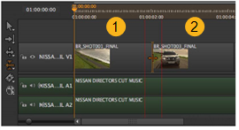
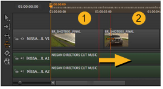
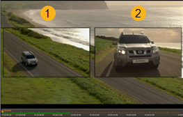
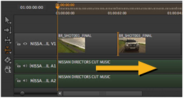

的 滚动编辑 工具允许您在可用控制柄内滚动单个编辑，缩短一个剪辑实例，同时延长另一个剪辑实例，但保持总持续时间不变。激活 滚动编辑 通过单击工具或按 R .
注意: 至少有一个目标项必须具有句柄才能使用 滚动 工具。
| 1。 | 单击两个剪辑实例之间的编辑点，将可用控制柄显示为红色覆盖。 |
| 2. | 将编辑拖到新位置，然后释放鼠标完成滚动。 |
例如，如果在一个剪辑实例 (1) 的末尾滚动五个帧，则下一个项目 (2) 将在五个帧之后开始。第一个图像显示包含两个剪辑实例的时间线，第二个图像显示右侧 “滚动” 编辑点的相同项目。


查看器在左侧显示编辑前剪辑实例，在右侧显示编辑后项目，允许您准确测量编辑的新位置。

或者，单击剪辑实例之间的编辑点，然后使用 , (逗号) 或 . (期间) 键或保持 转变 要轻推的 帧增量 设置在查看器下。

|
|